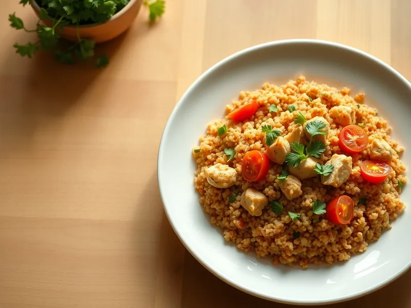

Фото: Иллюстрация ИИ, Cloudflare Workers AI
Булгур с курицей и помидорами
Булгур, сваренный вместе с курицей, перцем и помидорами в одной сковороде
30 мин4 порц.464 ккал на порциюБ 34 · Ж 11 · У 50Средиземноморская кухня
Продукты на 4 порц.
- Булгур1,5 стак.
- Куриное филе400 г
- Лук репчатый1 шт
- Перец болгарский1 шт
- Помидоры2 шт
- Томатная паста1 ст. л.
- Чеснок2 зуб.
- Оливковое масло2 ст. л.
- Паприка1 ч. л.
- Вода2,75 стак.
- Соль2 ч. л.
- Петрушка по желанию0,5 пучка
Как готовить
- Нарежьте филе кубиками 2 см, лук и перец мелкими кубиками, помидоры кубиками, чеснок мелко.
- Разогрейте масло в глубокой сковороде на сильном огне и обжарьте курицу 4 минуты, пока кусочки не побелеют.
- Добавьте лук и перец и жарьте на среднем огне 3 минуты, затем помидоры, томатную пасту, чеснок и паприку, ещё 2 минуты.
- Всыпьте булгур, перемешайте, влейте горячую воду и посолите.
- Доведите до кипения, накройте крышкой и готовьте на слабом огне 15 минут, пока булгур не впитает воду и не станет мягким.
- Снимите с огня, дайте постоять под крышкой 5 минут, перемешайте вилкой и посыпьте петрушкой.
Совет. Берите булгур крупного помола: мелкий подходит для салатов и в сковороде превратится в кашу.